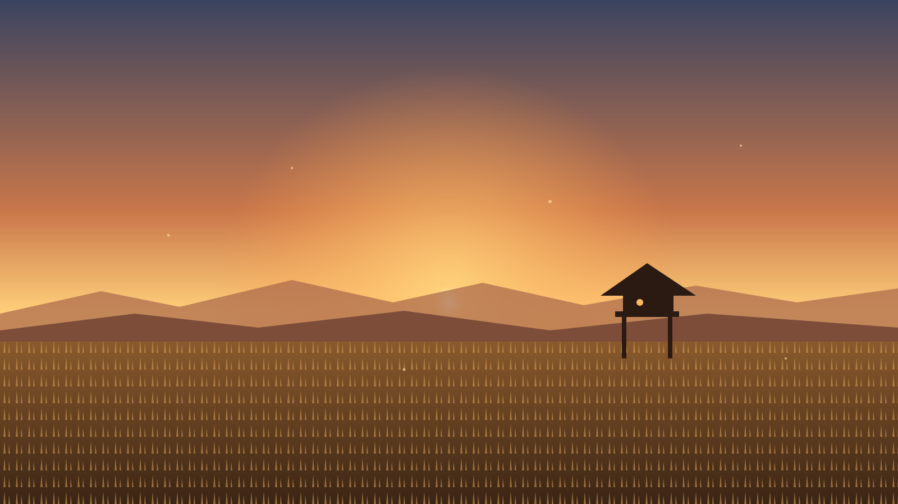
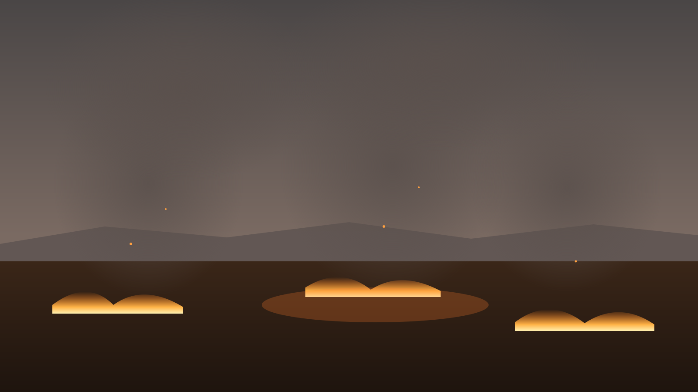
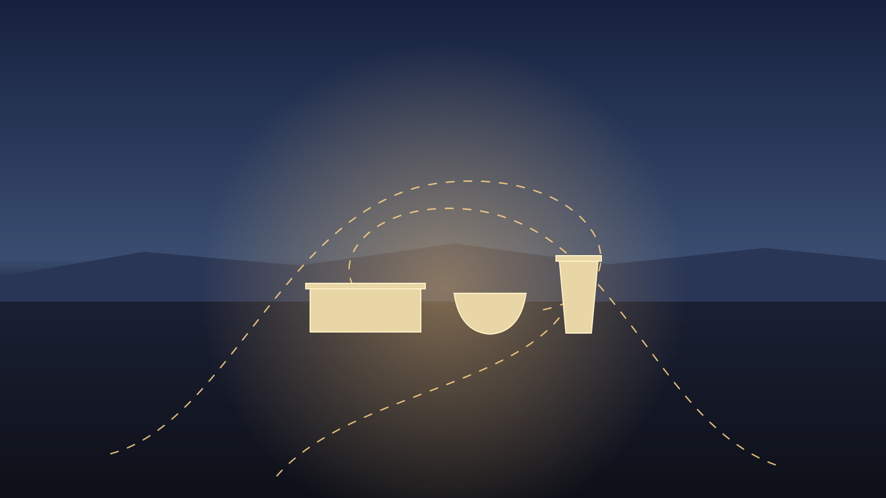
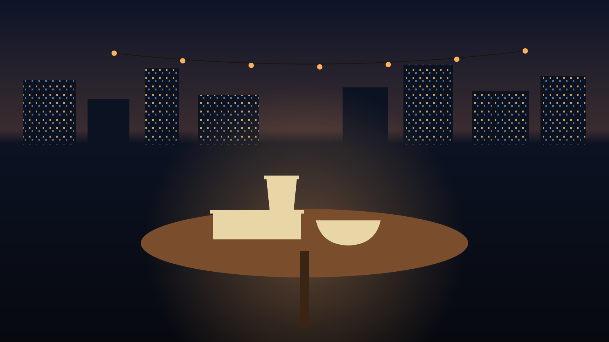

Straw, not smoke.
Northern Thai rice straw, bought before it burns, pressed into food boxes.
Skip the film
The field
Every year, northern farmers burn millions of rai of straw after the harvest.

The smoke
What if the straw was worth more than the fire?

The straw
We buy it from the farmer and press it into packaging.

The table
Boxes, bowls and cups for Bangkok's cafés and restaurants.
Illustrative counters, a story figure, not real data
- Rai saved from burning
- 412
- Farmers paid
- 138
- Boxes made
- 13,390,000